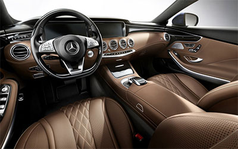
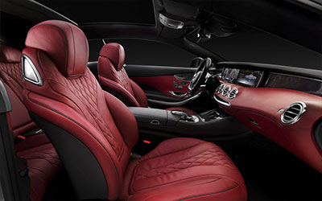

Women talk about men inside sports cars
The interior features a mix of wood, carpet and touch-enabled panels that blend together into an environment Mercedes-Benz rightly describes as a “cocoon.” When both front seats are turned around, back-seat passengers can activate a touch-screen table that extends into the middle of the cabin and can be used by all passengers. Still, the effect of being driven by a car is slightly disorienting. Since you can’t see any steering mechanisms, you can’t anticipate which way the car is going to move next, and each speed change comes as a mild surprise. For some, it could well lead to car sickness. Somehow, though, having a person in the driver’s seat face you while the car is moving is slightly less disturbing than watching someone refuse to put his hands on the wheel.
While the considerations that go into a Mercedes-Benz interior are countless, the goal is quite singular when you first step inside and close the door you should feel at home. To that end, we painstakingly craft even the smallest detail to create an atmosphere that gives you a sense of confidence and well-being.The vehicle’s carriage-style design features saloon doors that open wide to reveal an interior that’s more like a living room than the inside of a car. There are no side pillars or center obstructions. The two front seats swivel around completely so the driver and front-seat passenger can face the rear of the car.